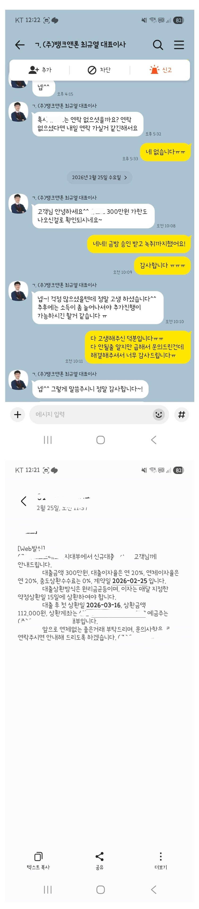

[개인회생자대출] 거의 포기상태에서 상담한건데 가능하게 해주셔서 감사합니다?
재직형태 : 프리랜서 , 주부
재직기간 : 4년 3개월
사대보험 가입유무 : 무
소득 : 인정소득 연 1200만원
신용등급 : 개인회생 2회 미납 (34/36)
채무내역 : 대부업체 500만원 중 약 380만원 대출, 정부 불법 사금융 방지 대출 100만원
필요서류 : 신분증, 통장사본, 건강보험 자격득실확인서, 재직증명서, 급여통장 입출금내역 3개월, 초본

솔직히 여러군데에서 대출조회 해봤을때 소득이 적고 이미 기대출이 있어서 되는 곳이 없었습니다.
그래도 너무 급한 상황이라 반포기 상태에서 큰 기대없이 신청했는데 담당자님께서 정말 잘 신경써주셔서 가능했습니다.
무엇보다 서류제출 매번 하는 것도 큰 번거로움인데
담당자님께 한번 제출한 것으로 서류제출도 알아서 되어 과정도 너무 편했습니다.
며칠동안 잠도 못잘만큼 스트레스가 심했는데, 불가능을 가능하게 만들어주신 덕분에 마음놓고 잘 수 있었어요.
개인회생 대출은 다 부결이라 주부대출로 알아봐주시고,
가능하도록 노력해주셔서 필요자금 마련했어요.
자기일처럼 신경써주셔서 정말 감사했습니다,
최규열 담당자님?
https://cafe.naver.com/cityman88/310251